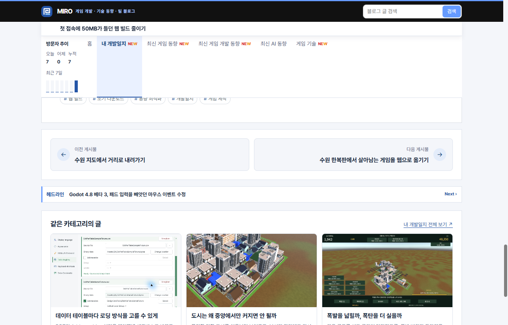
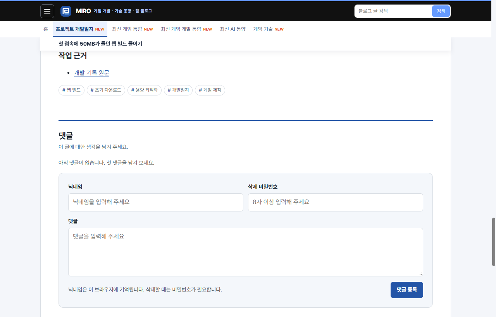
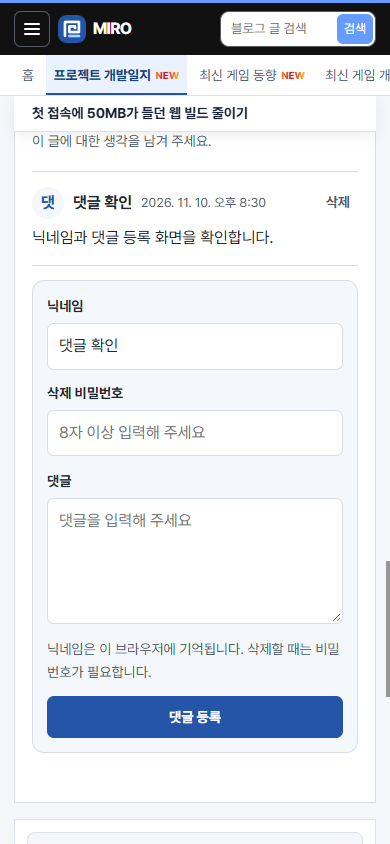
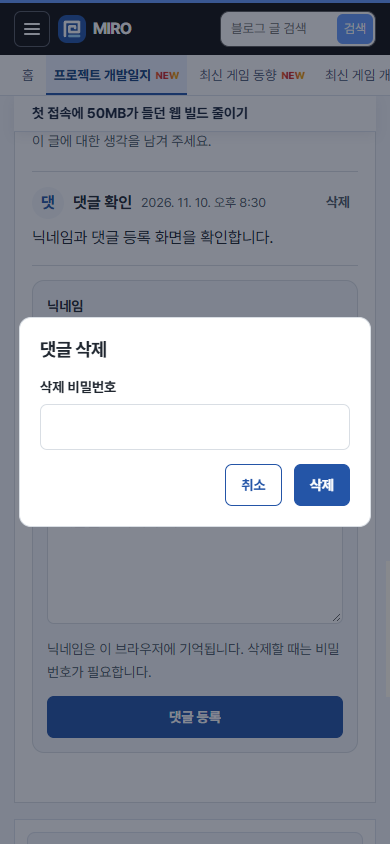

Tracefolio REPORTS & ISSUES
Tracefolio REPORTS & ISSUES비회원 댓글 운영 배포와 공개 동작 확인
완료공개 블로그에서 댓글 작성과 비밀번호 삭제를 확인했습니다.
작업 결과
운영 게시글에 댓글을 배포했습니다. 공개 브라우저에서 댓글 등록, 닉네임 복원, 잘못된 비밀번호 거부와 정상 삭제를 확인했습니다.
변경 내용
적용 내용
- PR #1을 병합했습니다. 첫 실행에서
verify.mjs의 스크립트 허용 목록 검사가 새 댓글 스크립트를 거부했습니다.verify.mjs의 HTML 검사 루프에서 댓글 스크립트를 허용하고 글 상세에만 존재하도록 확인합니다. - 댓글 작성 폼은 아래 함수로 닉네임을 기억합니다. 비밀번호는 서버가 댓글별 검증값으로 저장합니다.
function rememberNickname(value) {
try {
if (value === undefined) return localStorage.getItem(nicknameKey) || '';
if (value.trim()) localStorage.setItem(nicknameKey, value.trim());
else localStorage.removeItem(nicknameKey);
} catch {
return '';
}
}
flowchart LR A["글 상세 로드"] --> B["브라우저에서 닉네임 복원"] B --> C["닉네임·본문·삭제 비밀번호 전송"] C --> D["Pages API에서 입력 검증"] D --> E["D1에 댓글과 검증값 저장"] E --> F["댓글 표시 및 닉네임 기억"]
flowchart LR
A["댓글 삭제 클릭"] --> B["비밀번호 입력"]
B --> C{"서버 검증값 일치?"}
C -->|일치| D["D1 댓글 삭제 및 목록에서 제거"]
C -->|불일치| E["403 응답과 안내 표시"]
대화 기록
- 사용자 (시각 미기록) · “배포 해 확인해보게”
- AI (20:28 KST) · 승인받은 PR을 병합했습니다.
- AI (20:29 KST) · 실패한 검사에서 댓글 스크립트 허용 조건을 수정해 푸시했습니다.
- AI (20:31 KST) · 운영 배포와 공개 동작 확인을 마쳤습니다.
검증
- GitHub Actions에서 사이트 빌드,
verify.mjs, Cloudflare Pages 배포가 성공했습니다. - 공개 댓글 API 200, 브라우저 등록과 새로고침 후 닉네임 복원, 틀린 비밀번호 거부, 올바른 비밀번호 삭제를 확인했습니다. 검증용 댓글은 공개 API에서 제거됐습니다.




남은 사항
운영 배포와 공개 동작 확인 완료. 브라우저 프로필과 검증용 댓글을 정리했습니다. 전역 및 프로젝트 지침은 기존 규칙을 유지했습니다.
작업 시간
- 제안 시간: 3~8분
- 실제로 완료된 시간: 운영 배포 및 공개 동작 확인 3분 2초. 2026-11-10 20:27:59 KST 시작, 20:31:01 KST 완료.
- XERJ: 미사용 — 지정 검색 도구를 사용하지 않았습니다.